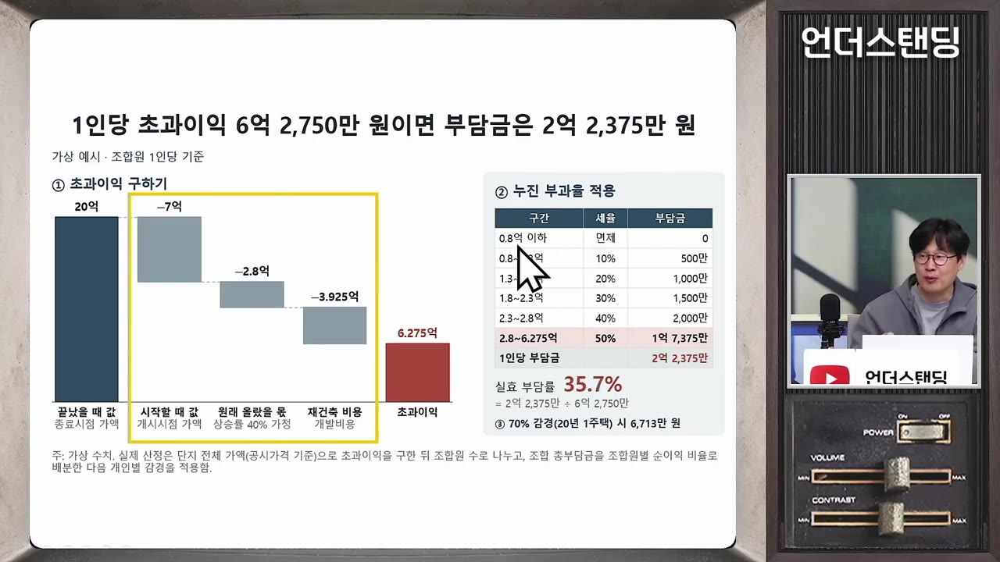
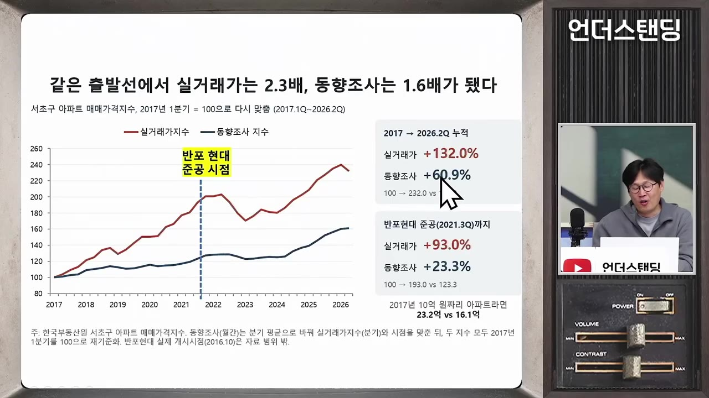

집 팔지 않았는데 1인당 2억 원씩 '재건축 초과이익 부담금' 통지서. 부과 방식 계산법 두고 논란 본격화 (언더스탠딩 장순원 기자)
▶ 원본 영상 보기한눈에 보기
- 서울 서초구가 반포현대(현 반포 센트레빌 아스테리움) 조합에 재건축 초과이익 환수 부담금 179억 원을 사전 통지했고, 조합원 1인당 약 2억 원 수준이다.
- 부담금은 '준공 시점 집값 − 착공 시점 집값 − 주변 정상 상승분 − 건축비'로 초과이익을 구하고, 누진 구간(최고 50%)을 적용해 계산한다.
- 쟁점은 세 가지다: 부과 시한(2026년 말 vs 2029년), 준공 후 집을 판 경우 납부 주체, 정상 상승분 산정에 쓰는 통계(부동산원 동향조사 vs 실거래가 지수).
- 기자는 서울 대부분 단지의 부담금이 1억 원 안팎이라, 재건축을 막을 정도의 걸림돌이라는 주장은 약하다고 본다.
- 제도의 향방은 법제처 유권해석, 소송, 여야 협의에 달려 있다.
이런 분께 도움이 됩니다
- 재건축 단지 조합원·매수 예정자로, 재초환 부담금이 어떻게 계산되고 누가 내는지 알고 싶은 분
- 재초환 논란의 쟁점(시한·통계·미실현 이익)을 한 번에 정리하고 싶은 분
핵심 내용
재초환 구조와 계산법
- 재건축으로 생긴 초과이익의 일부를 부담금으로 걷는 제도다. 부과 주체는 구청이고, 1차 납부 대상은 조합이다. (1:37)
- 초과이익 = 준공 시점 아파트 가격 − 착공(개시) 시점 가격 − 재건축을 안 했어도 주변 따라 올랐을 정상 상승분 − 건축비. (2:40)
- 기자의 임의 예시: 준공 시 20억, 개시 시 7억, 주변 40% 상승(2.8억), 건축비 4억 → 초과이익 약 6억 → 부담금 약 2.2억.
- 1인당 평균 초과이익 8천만 원 이하는 면제, 초과 시 5천만 원 단위 누진 구간으로 올라가며 최고 50%다. 초과이익이 1억 원이면 부담금은 약 200만 원, 3억 원이면 약 6천만 원이다.
- 조합원별 배분은 각자의 순이익(새 집값 − 옛 집값 − 분담금 등) 비율로 나눈다. 예: 총 순이익 35억 중 A 10억, B 12억, C 13억이면 부담금 3억 원 중 A는 약 8,500만 원. (14:52)
- 개인 감경이 있다. 20년 이상 보유한 1주택자는 최대 70% 감경되어 A의 8,500만 원이 약 2,500만 원이 된다.
💡 초과이익이 1억 원 이하면 사실상 부담이 거의 없고, 6억 원대부터 부담이 급격히 커진다.

제도 연혁
- 2006년 노무현 정부 때 도입(당시 1인당 초과이익 3천만 원 초과 시 부과). 강남 재건축 투자 과열과 이익 독식 문제가 배경이다.
- 글로벌 금융위기 이후 2018년까지 유예, 2018년 부활. 윤석열 정부 때 2024년 개정으로 면제 기준을 8천만 원으로 올리고 구간 단위를 2천만 원에서 5천만 원으로 넓혀 부담을 낮췄다. (7:01)
- 반포현대는 개정 이후 사실상 처음 본격 적용되는 대형 사례다.
쟁점 1: 부과 시한
- 반포현대는 2021년 7월 준공이라 원래 준공 후 5개월 이내 부과 대상이었으나, 제도 존폐 논란 속에 구청이 부과를 미뤘다. (9:01)
- 법상 부과 가능 기간은 최장 5년이라 일반 해석으로는 2026년 말이 시한이다. (10:07)
- 반면 2024년 3월 개정법 시행 후 부과할 수 있다는 특례 조항을 근거로 2029년까지 가능하다는 주장도 있다. (11:09)
- 서초구는 사전 통지를 내면서 국토부에 유권해석을 의뢰했고, 국토부는 법제처에 다시 의뢰했다.
- 서초구는 재초환 폐지를 건의한 입장이라, 2029년까지 가능하다는 해석이 나오면 부과하지 않을 가능성이 크다고 기자는 본다.
- 사전 통지서는 조합이 비용을 증빙해 재계산을 요청할 수 있는 단계다. 집값은 준공 시점 공시가격으로 고정되고 비용 항목만 다툴 수 있다.
쟁점 2: 준공 후 집을 판 경우 누가 내나
- 법상 부담 대상은 준공 시점 소유자다. 그러나 통지는 조합에만 가고, 조합이 알아서 걷어야 한다. (14:25, 17:54)
- 준공 후 5년간 소유자가 바뀐 단지가 많아, 현 소유자가 "내가 왜 내냐"며 거부하면 조합이 옛 소유자를 찾거나 소송해야 한다.
- 시장에서는 매매 특약(부담금을 매도인이 낸다/매수인이 낸다)을 쓴다. 기자가 든 사례에서 호가가 5~6억 원 차이 난다고 한다. (18:55)
- 국토부는 이 질문에 "구체적 사례가 없어 할 말이 없다"고 답했다고 기자는 전한다.
- 미납 시 가산세·과태료·지연이자가 붙고, 행정소송은 납부 후에 해야 할 것이라고 기자는 설명한다.
쟁점 3: 정상 상승분 산정 통계
- 현재는 한국부동산원 전국주택가격동향조사의 아파트 매매가격지수를 쓴다. 표본 조사원이 평가하는 방식이라 급등기에 보수적으로 반영되고, 서초구 안에 중소형·구축 표본이 섞여 상승률이 낮게 나온다는 설명이다. (36:14)
- 기자가 2017년~2026년 2분기를 비교한 결과, 동향조사 지수는 완만하게, 실거래가 지수는 가파르게 올라 누적 상승폭이 거의 2배 차이 난다. (35:15)
- 정상 상승분이 작게 잡히면 초과이익이 커진다. 예시에서 40% 상승이면 2.8억 원 공제, 100% 상승이면 7억 원 공제로 결과가 크게 달라진다. (37:34)
- 국토부는 실거래가 지수가 시군구 단위로 모두 나오지 않고, 법이 시군구별 상승률 적용을 규정해서 어쩔 수 없다고 설명한다.
- 기자의 대안: 법을 개정해 두 지표 중 더 많이 오른 쪽을 공제하는 방식.
- 영상은 이 대안을 반포현대에 적용하면 부담금이 사실상 사라질 수 있다고 설명한다.
💡 "정상 상승분"을 어떤 통계로 재느냐가 부담금 규모를 좌우하는 핵심 변수다.

미실현 이익 논란
- 반대 측: 팔지 않았고 현금도 들어오지 않았는데 수억 원을 내라는 것은 부당하다. 양도세와 보유세 성격이 섞여 혼란스럽다. (23:33)
- 찬성 측: 재건축을 하나의 사업으로 보면 준공 시점에 손익이 확정되므로 미실현이 아니다. 조합에 부과하는 것도 사업 주체이기 때문이다. (24:01)
- 헌법재판소는 과도한 재산권 침해가 아니고 미실현 이익 문제도 사업 사이클로 볼 수 있다며 합헌 취지로 판단했다고 기자는 설명한다. (25:07)
- 현금이 없는 고령 은퇴자에게는 납부 이연(미루기) 제도가 있다. 다만 무한정 미룰 수 있다는 비판도 있다.
재건축 사업의 걸림돌인가
- 전국 부담금 규모는 5조 원 이상이고, 그중 서울이 약 4조 4천억 원이다. 용산 한강맨션은 1인당 약 7.7억 원이다. (27:09)
- 서울 평균은 1인당 약 1억 원으로 추정된다. 감경(20년 보유 1주택자 70%)을 고려하면 약 3천만 원이다. 기자는 4~7억 원 수준의 일부 강남 알짜 단지에만 해당하는 부담이라고 본다. (28:57)
- 걸림돌이 되려면 부담금이 크고, 공사비가 많이 들며, 집값 상승도 약한 조건이 겹쳐야 한다는 것이 기자의 판단이다. (30:03)
- 부담금은 사업 초기가 아니라 준공 후에 내므로 사업 추진 동기를 꺾는 효과는 제한적이라고 본다.
앞으로의 전망
기억할 숫자·인용
- 반포현대 사전 통지 부담금 179억 원, 1인당 약 2억 원 (2021년 7월 준공)
- 면제 기준: 1인당 초과이익 8천만 원 이하 / 최고세율 50%
- 장기 보유 1주택자 최대 70% 감경
- 서울 평균 부담금 약 1억 원, 한강맨션 약 7.7억 원
- 전국 부담금 5조 원 이상, 서울 약 4조 4천억 원
생각해볼 점
- 영상에서 기자는 통계 문제를 비판적으로 다루지만, 실거래가 지수는 변동성이 크다는 단점도 스스로 인정한다. 어느 쪽이 더 적절한지는 별도 검증이 필요하다.
- "서울 대부분은 1억 원 안팎이라 걸림돌이 아니다"는 기자의 추정이다. 단지별 분포와 조합원별 감경 반영 후 실부담은 별도 자료로 확인해야 한다.
- 유권해석과 소송 결과에 따라 부과 시점과 금액이 바뀔 수 있으므로, 이 영상 내용은 2026년 11월 기준의 진행 중인 상황이다.
- 투자·법률 판단은 영상 속 주장임을 감안하고 전문가 확인이 필요하다.
바로 해볼 일
- 재건축 단지 보유자라면 조합에 사전 통지 여부, 시한 해석, 조합원별 배분 산식을 문의하기
- 재건축 단지를 사거나 팔 계획이면 계약서 특약에 재초환 부담 주체를 명시했는지 점검하기
- 법제처 유권해석 결과(부과 시한 2026년 말 vs 2029년)가 나오는지 확인하기